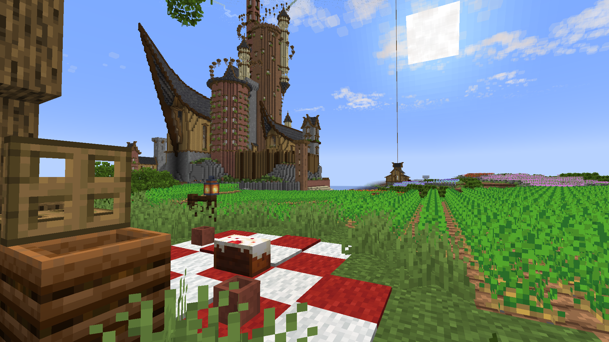

Ik ben Jelmer Huizenga, ik ben 17 jaar en kom uit Drachten.
Na de HAVO ben ik begonnen aan de opleiding HBO-Bouwkunde aan de NHL Stenden.

Ik zeg al jaren dat ik bouwkunde wil gaan doen na de HAVO en dat ik daarna verder wil als architect. Ik wil bouwkunde doen omdat ik het leuk vind om dingen te bouwen en ontwerpen, dit doe ik nu vooral in de videogame Minecraft, waar ik redelijk wat bouwwerken in heb gemaakt. Dit wil ik dus doorbrengen naar de echte wereld. Ook vind ik het leuk om soms te coderen, dit komt omdat ik het interessant vind om te zien hoe regels tekst een website worden, bijvoorbeeld deze website die ik zelf heb gecodeerd.
ja ...
tis een website
zoek t uit
...
je bent niet achtelijk toch
toch????